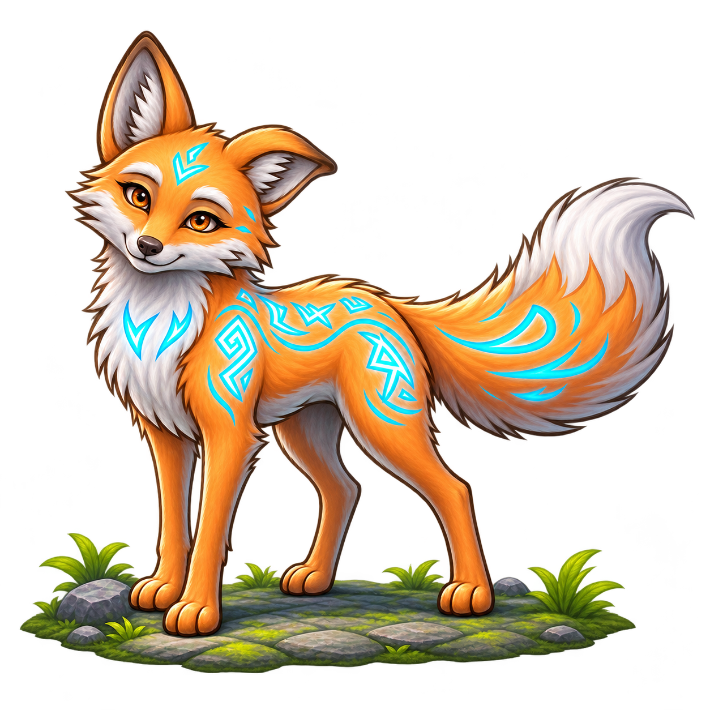
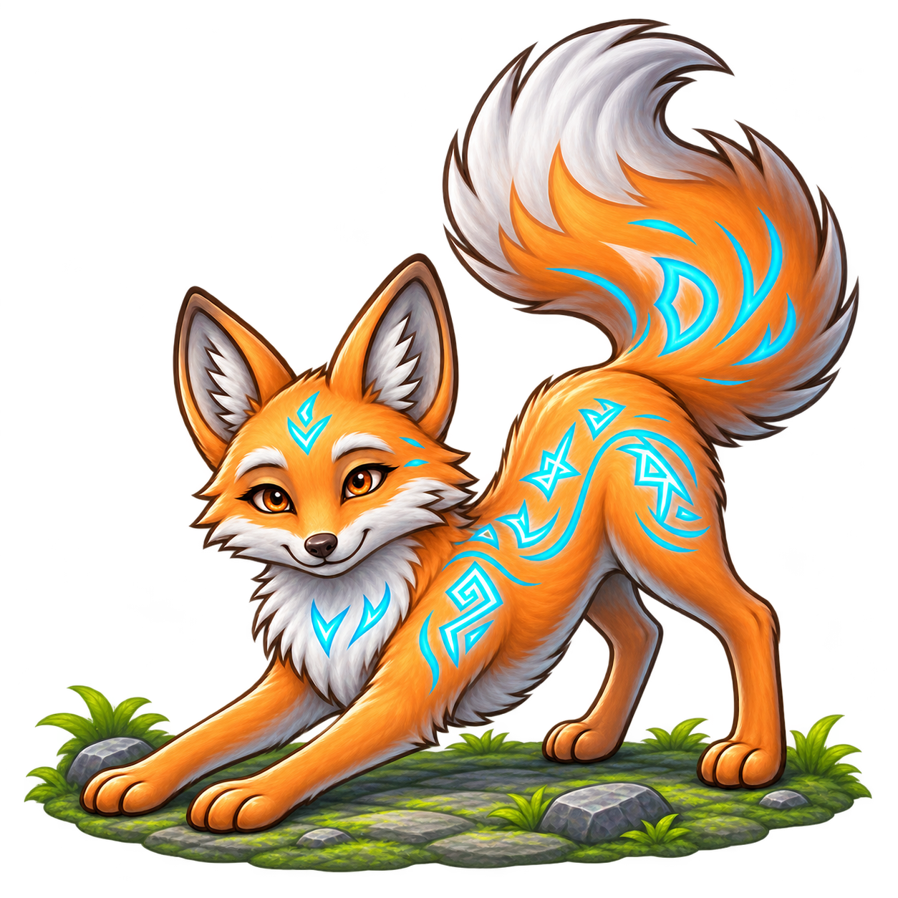
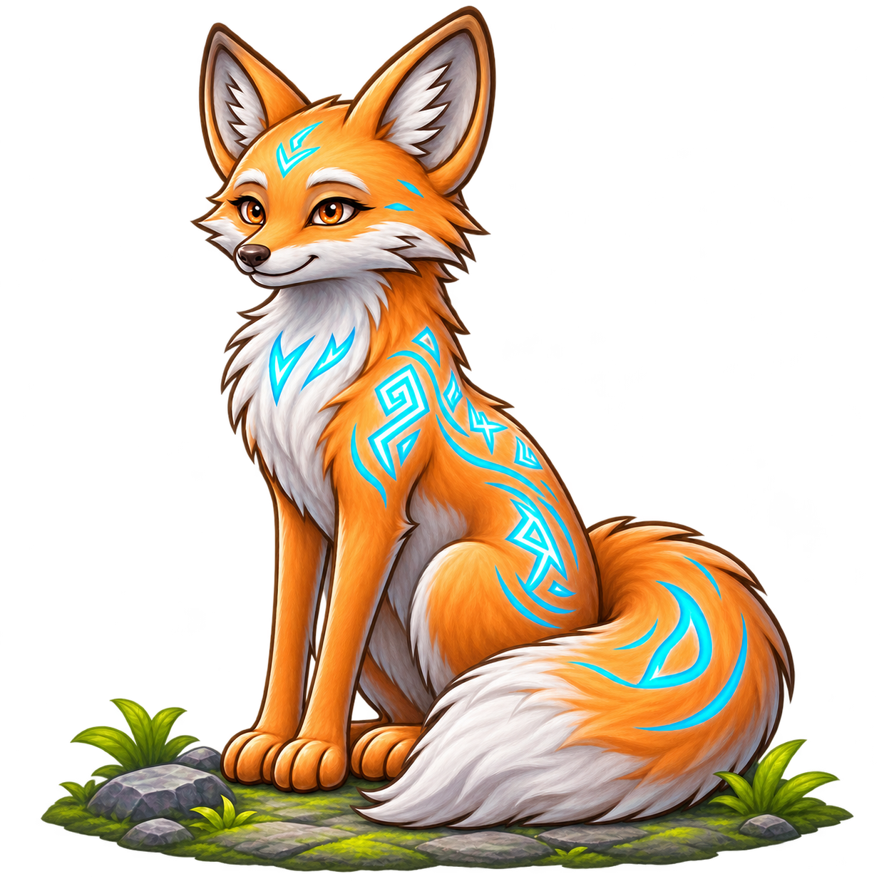

Zvědavá

Hravá

Hrdá

Tři různé postoje stejné lišky. Jde o návrhy póz, nikoli o tři úrovně vývoje. Další podoby využijí přirozené změny postoje; animace počkají na jejich schválení.
STATICKÉ NÁVRHY · V3



Tři různé postoje stejné lišky. Jde o návrhy póz, nikoli o tři úrovně vývoje. Další podoby využijí přirozené změny postoje; animace počkají na jejich schválení.